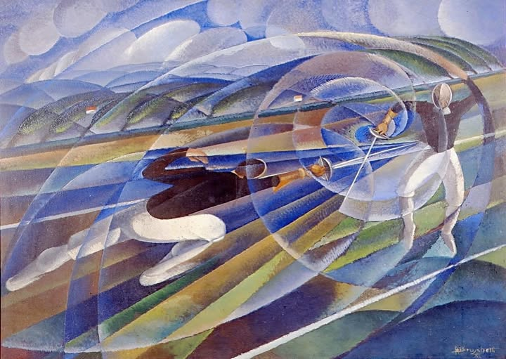

Perché l’Italia della scherma è una potenza sportiva?
Un approccio orientato alla Text Analysis

Un’indagine attraverso gli strumenti della Text Analysis
Dall’analisi dei dati olimpici è emerso chiaramente che esiste un gruppo di paesi specializzati in poche discipline, in cui si concentra la maggior parte delle medaglie. Chiedersi quali siano i fattori che determinano il successo sportivo di questi paesi, dunque, è un quesito che va ulteriormente precisato chiedendosi perché il successo sia maggiore in certe discipline invece che in altre.
L’Italia è proprio uno dei paesi più specializzati ed è a tutti noto come, storicamente, moltissime medaglie siano arrivate dalla scherma. Non potendo indagare i casi di tutti le “potenze sportive specialistiche”, ci siamo così concentrati sul caso italiano: perché l’Italia è particolarmente forte nella scherma?
Per trovare una risposta abbiamo adoperato gli strumenti della Text e Sentiment Analysis. Abbiamo scaricato circa 400 articoli del quotidiano La Repubblica, dedicati alla scherma italiana e pubblicati negli anni fra il 2000 e il 2024. Li abbiamo poi passati a un Language Model a cui è stato richiesto di trovare, all’interno di tale spaccato dell’opinione pubblica, i possibili motivi del successo dell’Italia nella scherma.
Il modello ha fornito una risposta piuttosto precisa e verosimile, confermata e arricchita anche dall’esperto che in seguito abbiamo intervistato (vedi l’intervista dedicata):
- esistenza di una lunga tradizione di schermidori
- supporto da parte di FIS (Federazione Italiana Scherma) e governo nell’implementazione di efficaci politiche sportive, in particolare per quanto riguarda la formazione degli atleti e la qualità dell’allenamento
- presenza di molti atleti di alto livello che hanno creato squadre forti nel temporale
- forte esposizione mediatica della scherma.
Infine, abbiamo fatto anche un’analisi emotiva degli articoli di giornali. Usando un modello in grado di riconoscere 27 emozioni differenti in un testo, abbiamo ottenuto dei punteggi per articolo e per emozioni (punteggio compreso fra 0 e 1, nel grafico portato a percentuale). Facendo una media, si può vedere come gli articoli siano “neutrali” al 47%; tuttavia, emozioni quali “approvazione” (11%), “ammirazione” ecc. ottengono comunque punteggi rilevanti.
Si può, dunque, concludere che la scherma italiana, in virtù della sua consolidata tradizione di successi, è più di un semplice sport. La scherma è entrata a far parte dell’identità non solo sportiva dell’Italia, cosa testimoniata anche dall’interesse delle istituzioni pubbliche, ed è caricata di significati e aspettative che vanno al di là della performance sportiva. Ecco che, allora, parlare di scherma non è un semplice “resoconto” ma una narrazione emotivamente connotata, espressione di una parte importante dell’identità nazionale.
La pipeline di Text Analysis
Per la prima parte della Text Analysis si è dovuto innanzitutto scaricare gli articoli della Repubblica attraverso un semplice algoritmo di scraping. I testi così scaricati sono stati poi puliti (rimozione dei caratteri mal codificati) e se ne è acquisita la data di redazione (in alcuni casi la data era contenuta nell’url stesso dell’articolo, altre volte, invece, era rintracciabile nel corpo del testo). Ciò fatto, gli articoli sono stati salvati in un file repubblica_clean.json: una lista di dizionari con chiavi title, date, url e text. Ogni dizionario viene così a rappresentare un articolo.
I testi sono stati poi passati al modello Llama 3.1 con 8 miliardi di parametri nella versione quantizzata a 4 bit. La relativamente piccola dimensione di questo modello ha fornito diversi vantaggi, in quanto ha consentito:
- di far girare il modello in locale su un pc equipaggiato con una GPU Nvidia RTX 5060 Ti con 16 GB di memoria VRAM;
- di impostare un contesto molto grande (64000 token) senza saturare la memoria della GPU;
- di avere libera memoria VRAM per caricare altri language model senza smontare Llama (vedi oltre).
Il prompt passato a Llama per scoprire le ragioni del successo dell’Italia nella scherma è stato così formulato:
Rispondi alla domanda dell'utente con un testo continuo e articolato. Non rispondere in maniera schematica. Cita nomi di personaggi importanti relativi all'argomento trattato, se ce ne sono; se essi hanno ottenuto risultati importanti, fai qualche esempio. Produci un testo di almeno 500 parole.
Ovviamente, Llama non doveva cercare la risposta all’interno della conoscenza che ha incorporata: la risposta non sarebbe stata affidabile né controllabile. Occorreva, dunque, impostare una semplice pipeline RAG, cioè fornire a Llama gli articoli di giornale come contesto della risposta.
Tuttavia, per quanto la dimensione del contesto di Llama fosse generosa, sarebbe stato impossibile passare al modello tutti e 400 gli articoli di giornale. Si è dovuto quindi implementare un semplice sistema di Information Retrieval in modo da selezionare gli articoli più rilevanti (molti, per esempio, si limitavano a enunciare i risultati ottenuti dagli atleti).
Si è usato un language model (GTE base) in modo da poter formulare query semantiche e non lessicali, cosa che sarebbe stata troppo limitante. A GTE è stata poi passata la seguente query: “Quali articoli spiegano le ragioni dei successi dell’Italia nella scherma?”; il modello ha trovato, all’interno del corpus di Repubblica, i 40 articoli più rilevanti e li ha passati a Llama. Su tale base, Llama ha fornito una risposta che può essere consultata per esteso qui.
La pipeline di Sentiment Analysis
L’analisi del sentiment ha posto delle sfide particolari, in quanto ad oggi non risultano modelli addestrati sull’italiano. Il modello più valido è ROBERTA, uno dei modelli derivati da BERT, in grado di riconoscere ben 27 emozioni in un testo; tuttavia, il modello è stato addestrato solo in inglese. Per aggirare l’ostacolo, dunque, Llama ha tradotto in inglese tutti gli articoli di Repubblica.
Il file repubblica_clean.json è stato caricato in un DataFrame ma prima di poterlo usare è stato necessario compiere alcune operazioni preliminari. Innanzitutto, ci siamo accorti che molti degli articoli scaricati trattavano solo marginalmente della scherma, mettendola a lato di altre notizie. Si è usato Llama, dunque, per selezionare gli articoli pertinenti, che poi sono stati salvati in un file repubblica_clean_screened.json. A tale scopo, Llama è stato istruito con un prompt piuttosto elaborato:
Sei un revisore accurato e scrupoloso.
Leggi il testo contenuto nel tag <text>
e stabilisci se l'argomento principale del testo è la scherma.
Ricordati che il fioretto, la sciabola e la spada sono discipline della scherma.
Segui queste istruzioni:
- rispondi semplicemente "1" se l'argomento principale del testo è la scherma;
- rispondi semplicemente "0" se il testo parla di scherma ma anche di altri argomenti;
- rispondi semplicemente "-1" se l'argomento principale del testo non è la scherma.
Non aggiungere commenti o spiegazioni.
Per rispondere in maniera affidabile, considera questi esempi:
Esempio 1:
- Testo: "Fantastico successo di Valentina Vezzali che, negli ultimi campionati mondiali di scherma, ha ottenuto un'altra medaglia d'oro".
- Risposta corretta: 1.
- Giustificazione: la notizia riguarda i successi della famosa campionessa di scherma Valentina Vezzali.
Esempio 2:
- Testo: "Al Palazzetto dello sport di Bologna si sono tenuti i giochi sportivi provinciali. Grande partecipazione di giovani che hanno gareggiato a basket, pallavolo e scherma".
- Risposta corretta: 0.
- Giustificazione: la notizia parla di sport a livello locale; fra i vari sport menzionati c'è anche la scherma
Esempio 3:
- Testo: "Il pugile Cammarelle è sicuramente uno dei più grandi campioni della storia. Il suo modo di fare boxe è elegante; quando Cammarelle combatte, il pugilato è elegante come la scherma".
- Risposta corretta: -1.
- Giustificazione: nonostante il testo usi la parola "scherma", essa è usata come metafora; il testo, in realtà, è dedicato al pugile Cammarelle e al suo modo di interpretare la boxe.
<text>...</text>
Come si può notare, si è fatto uso di una tecnica di zero-shot learning: per aumentare l’efficacia del modello nel compito di classificazione, si sono forniti esempi all’interno del prompt spesso. Sono stati tenuti solo gli articoli con punteggio 0 e 1 e così, alla fine del processo, si è ottenuto un dataset di 200 testi selezionati e pertinenti.
Da ogni record del dataset “screened” si è poi estratto il campo text. Questo è stato inserito in un tag <source> e finalmente passato a Llama in un prompt contenente l’ordine di traduzione in inglese:
Sei un traduttore professionista. Traduci il contenuto del tag <source> in inglese. Non aggiungere commenti o spiegazioni.
La presenza del tag ha reso più chiaro, per il modello, scopo e oggetto del compito.
Si sono quindi salvati i testi in inglese in un nuovo dataset in repubblica_clean_en_screened.json, strutturato in maniera analoga a quello in italiano; i testi tradotti sono poi stati passati a ROBERTA che, ha determinato il valore emotivo di ogni articolo attribuendo un punteggio compreso fra 0 e 1 per ogni emozione. Il tutto è stato salvato in un nuovo e definitivo dataset, repubblica_emotions.json, derivato da repubblica_clean_en.json con l’aggiunta di 27 colonne, una per emozione. Ovviamente, all’intersezione delle nuove colonne con le righe esistenti, è stato salvato il punteggio dell’emozione corrispondente.
Conclusioni
Infine, è possibile mostrare in un grafico riassuntivo l’andamento nel tempo dello stato d’animo della stampa italiana nei confronti della scherma. Se definiamo l’emozione “enthusiasm” come la somma aritmetica di “admiration” e “approval” è possibile ottenere un grafico a dispersione in cui ogni punto rappresenta un articolo, mettendo in ascisse il momento della pubblicazione e in ordinata il livello di “entusiasmo” espresso. Passando il mouse sopra un punto, si può visualizzare un tooltip con le informazioni di base sull’articolo corrispondente; cliccando sul punto si viene reindirizzati al sito della Repubblica per leggere il testo.
Come si può vedere, gli articoli possono essere raggruppati in diversi cluster, ovviamente in base alla data di pubblicazione ma anche del punteggio emotivo. È interessante notare come nel tempo sia aumentato il numero di articoli dedicati alla scherma e come anche il cluster 4, che rappresenta il gruppo di articoli entusiastici di epoche più recenti, sia più denso e abbia al suo interno articoli con punteggi fra i più alti in assoluto.
Sembra, dunque, visibile un andamento che conferma la storia che tutti conosciamo: l’esplosione della scherma italiana grazie a diverse generazioni di atleti (specialmente nella squadra femminile) che proprio dagli anni Duemila, e in particolare dalle Olimpiadi del 2004, hanno mietuto moltissimi successi. Chi era un adulto o un adolescente a quell’epoca ricorderà senz’altro i nomi di Valentina Vezzali, Giovanna Trillini, Margherita Granbassi, Salvatore Sanzo e tanti altri ancora.